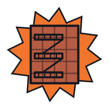
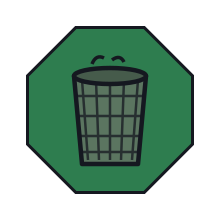
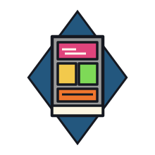

Every command source — a headset, a phone, a browser, a learned policy — speaks one wire protocol and passes one whole-body controller. The MuJoCo twin runs the identical stack at 500 Hz. Nothing here is a demo copy.
Teleop and autonomy publish commands; driver nodes turn them into torque and
publish state back. Boot the twin and one mujoco_sim node stands in for every
driver — consumers never notice.
/mabel_cmd /nav/mabel_cmd /cmd_vel
/goal_pose /arms/command /body/command
/lift/command /left_hand/command /right_hand/command/joint_states /arms/joint_states /body/joint_states
/base/joint_states /lift/joint_states
/left_hand/joint_states /right_hand/joint_states
/odom /odom_laser /scan
/camera/front/color/image_raw /camera/zed/left/image_raw
/tf /clock/map /map_lidar /map_visual
/map_costmap /plan
/visual_slam/tracking/odometry /odom_ground_truth
Retargeting produces arm and hand references. A joint-velocity projection enforces joint bounds and capsule-clearance constraints, while gravity- and friction-compensated impedance controls the arms and torso.
Grab a green palm and pull. Soft: the arm is back-drivable — it goes exactly where you put it and stays there. Stiff: it resists, and snaps back when you let go.
Swerve base, holonomic. Caps: 0.8 m/s linear, 2.0 rad/s yaw — the tip-over model trims them as the lift rises.
Pick a hand, then move the joystick — its green palm tracking point follows and that arm tracks it by IK. Both palms are tracked bimanually; base and lift are held.
Same green palm targets, but now the swerve base follows the hand centroid through the comfort box, and the lift & torso are jointly engaged — lazier (50× / 2× weighted) — to keep both hands in reach.
Interactive browser illustration of command modes; the equations below state the paper’s controller formulation.
The paper projects the two arm-and-wrist IK solutions (16 coordinates) onto the nearest admissible joint velocity. Jc = ∂dc/∂q is the clearance Jacobian for capsule pair c, ds is the margin, and κ sets the approach-rate bound. The arms and torso then track references with gravity and friction compensation plus low-gain impedance; hands, neck and lift use separate position control.
Paper: Whole-Body Teleoperation and Control →| Property | Result |
|---|---|
| Gravity-comp hold (3 s) | < 0.1 rad · sags > 1 rad w/o |
| Felt residual at ±40% mass error | < 0.06 N·m |
| Contact localization | 0.5 N · 1.7 cm, correct link |
| Self-collision, hand→chest | −3.5 cm → +4.1 cm standoff |

A model-based envelope limits base acceleration as the lift raises the center of mass. The browser illustration below shows how the support polygon, steering and lift height affect that envelope.
Drive it: raise the lift, slam the brakes, then switch the
model off and try again. The widget integrates the constants in
controller/mabel/motion_model/tip_over.py — nothing here is animated by hand.
The base-frame twist is νb = (v, ω). Module position rj is measured from the center of rotation; its velocity direction sets steering and its magnitude sets drive speed, scaled by cos ej for steering error. Each support edge has outward normal nk, CoM lever arm ℓk, and safety factor σk ≥ 1. The approximation fixes the planar CoM offset rc and neglects upper-body CoM motion.
Paper: Motion Model →
Head and wrist tracking estimate a body heading. A comfort box separates leaning from walking; shoulder-relative reach maps the wrists, and palm-frame fingertip targets drive the fingers.
wRb = Rz(ψ) is the estimated gravity-aligned body-heading frame. The bounded displacement becomes torso lean; the residual becomes walking intent. Neck angles reproduce head orientation relative to that heading, with torso pitch removed. Subscript a marks a latched anchor; * marks a reference.
Arm IK matches palm position and palm-normal, finger-axis and elbow directions, using warm-started damped Gauss–Newton. Finger retargeting matches fingertip positions P and thumb-to-fingertip vectors δ in the palm frame. The wrist is already part of the eight-coordinate arm solve.
NEO / NEO550 on 3 delta modules. Reverse-engineered SPARK CAN in Python + Teensy C++.
OpenArm-derived 7-DOF arms, quasi-direct-drive over CAN (Teensy + FlexCAN_T4), MIT-mode.
Torso pitch shares the arms' Damiao/CAN driver, status, and quick-control.
16× HLS3915 fingers + 1× HLS3930 wrist on a 1 MHz TTL chain; USB adapter auto-detected.
3-DOF neck (yaw / pitch / roll) via our dynamixel_neck library.
MicroPython, BTS7960 + quad encoder, cascaded position + velocity, host lib + iOS GUI.
Bring-up runs in a browser: a per-module status · control · calibration studio that walks the robot module by module — Arm, Base, Neck, Lift, Hand L, Hand R — and writes what it measures into one file the whole robot reads.
hardware_bridge/calibration_data/mabel.jsonEach module opens on a Control tab (enable torque, jog the joint)
and a Calibration tab. The lift is the clearest example: ⟳ Auto-calibrate
— an armed two-click confirm, because the column moves — fires the Pico's own
floor→ceiling stall-seek, and the studio records the measured travel window
(min_pos / max_pos / span) under the
lift/pico slice. The height slider only appears once that window exists, so you
can't drive a column whose limits nobody has measured.
Nothing is hard-coded in a node. Calibration lands in a
human-readable JSON file — diffable, reviewable, shareable — and a thin
service answers Zenoh queries against it, so a node asks
mabel/calib/arm/openarm-dual at startup and gets either one value or the whole
slice. Three families share the tree: calibration (written here),
network identity (human-set), and nominal physical (seeded
from the MuJoCo model) — the as-deployed counterpart to the as-designed model.
Don't skip the CoM check after any mass change:
wbc_stability.py --only 4. If E4 shows >1 cm bias, update the tip-over
constants — that measurement is what keeps MABEL from tipping.
One canonical model generates the URDF, the MJCF and every derived artifact.
The production controller drives MuJoCo unmodified at 500 Hz across 35 released
environments — use_sim:=true is the only difference. The twin has a
page of its own: the plant, the scene library, the renderers, simulated data collection
and the PPO track.